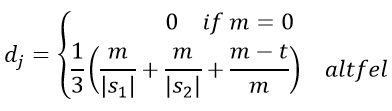
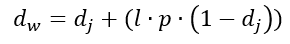
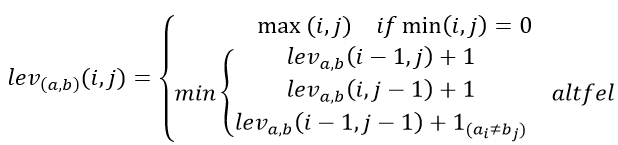
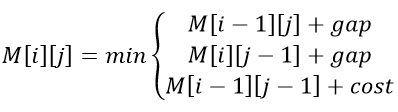
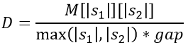

Data publicării: 14.05.2017
Autor articol: Adrian Iftene
Introducere
În această lucrare, prezentăm o parte din aplicație construită de noi cu scopul de a oferi utilizatorilor posibilitatea de a explora subiecte din Twitter și de a afla opinia oamenilor, fie că este una pozitivă, fie că este una negativă. Rezultatul căutării va fi împărțit în grupuri, în funcție de entitatea comună care apare în tweet-uri. Folosind mai mulți algoritmi care calculează distanța dintre două șiruri de caractere, tweet-urile similare vor fi eliminate. În continuare vom vedea care sunt algoritmii care ne dau distanța dintre două șiruri de caractere și modul în care am folosit acești algoritmi în aplicația noastră.
Rețeaua Twitter – Statistici
În 2012, peste 100 de milioane de utilizatori au postat 340 de milioane de tweet-uri pe zi, iar serviciul a gestionat în medie 1,6 miliarde de căutari pe zi1. În 2013, a fost unul dintre cele zece site-uri cele mai vizitate și a fost descris ca “SMS-ul Internetului”2. În februarie 2017, Twitter avea mai mult de 313 milioane utilizatori activi lunar3. În ziua alegerilor prezidențiale din 2016 din SUA, Twitter sa dovedit a fi cea mai mare sursă de știri de ultimă oră, cu 40 de milioane de tweet-uri trimise până la ora 10 seara4.
În fiecare zi, milioane de oameni folosesc Twitter pentru a crea, a descoperi și a face schimb de idei cu alții. Acum, oamenii se îndreaptă către Twitter ca o modalitate eficientă de a face afaceri. De la magazinele locale la mărcile mari și de la sectoare care fac construcții, la afaceri pe Internet sau chiar la servicii, oamenii înțeleg care sunt avantajele folosirii Twitter în activitățile lor5.
Există multe utilizări utile pentru Twitter, cum ar fi trimiterea de știri sau publicarea ultimului loc de muncă. Dar credeți sau nu, există și mai multe utilizări personale pentru Twitter6.
Aplicații similare
IceRocket7 este o aplicație pentru căutări pe blog-uri, dar oferă posibilitatea de a căuta știri pe Twitter. Căutarea pe Twitter va oferi cele mai recente tweet-uri care se referă la interogarea pe care o trimitem. Dacă interogarea este despre un utilizator, aceasta va afișa ca rezultat o fereastră cu informații despre utilizator, împreună cu tweet-urile acelui utilizator. Această aplicație ne permite să răspundem direct la tweet-uri. De asemenea, site-ul IceRocket este o resursă gratuită pentru persoanele care doresc să-și monitorizeze marca, fiind acceptate anunțurile de publicitate. IceRocket are un API pe care îl licențează firmelor de monitorizare socială și agențiilor PR8.
Twitonomy9 este o platformă online și pentru a o folosi trebuie să te conectezi cu contul tau Twitter. Utilizatorul are posibilitatea de a-și monitoriza contul sau orice alt utilizator Twitter, împreună cu liste și cu orice căutare pe bază de cuvinte pe care dorește să o monitorizeze. Twitonomy acționează ca un client uzual de Twitter. Aveți posibilitatea să răspundeți, să faceți retweet și să adăugați elemente noi la lista de tweet-uri preferate. Statisticile acestei aplicații include: tweet-uri postate de utilizator pe zi, câte link-uri au fost distribuite, cât de des am fost menționați de alții în tweet-uri, care dintre tweets-urile utilizatorului au fost cel mai des redistribuite10.
Descrierea aplicației
Această aplicație își propune să ofere utilizatorilor posibilitatea de a urmări știrile de pe Twitter, fără a avea la nivelul interfeței tweet-uri care apar de mai multe ori. Pentru a elimina știrile similare, a fost folosit un algoritm de similaritate care calculează distanța dintre două tweets. În prima fază, au fost făcute o analiză, în ceea ce privește timpul și precizia, pentru următorilor patru algoritmi care ne permit să calculăm distanța între două șiruri de caractere: Levenshtein, Needleman-Wunsch, Jaro-Winkler și Smith-Waterman. În Tabelul 1 avem rezultatele obținute în urma folosirii celor 4 algoritmi.
Tabela 1. Timpul de execuție (minute)
Fără cache |
Cu cache |
Cu cache după eliminarea stop-words |
|
Jaro-Winkler |
06:05.35 |
03:50.11 |
01:46.06 |
Levenshtein |
22:35.37 |
12:10.08 |
11:26.82 |
Needleman-Wunsch |
51:11.47 |
34:21.63 |
21:22.49 |
Smith-Waterman |
39:46.32 |
35:33.20 |
23:51.46 |
După analizarea rezultatelor obținute din Tabela 1, cu toate că Smith-Waterman găsea cele mai multe similarități (identificând și redistribuirile) am preferat să folosim algoritmul Jaro-Winkler deoarece viteza de execuție este mult mai mică în comparație cu celelalte, în contextul în care nu sunt diferențe mari între rezultate.
Când utilizatorul efectuează o căutare în aplicația noastră, se face o solicitare către API-ul de la Twitter pentru a prelua cele mai recente și cele mai populare tweet-uri. Rezultatul căutării va fi împărțit în subcategorii. Fiecare categorie va fi extrasă din tweet-uri și poate fi: o locație, o persoană, o organizație sau o dată. De asemenea, mesajele tweet vor fi analizate din punctul de vedere al sentimentului. Un tweet poate fi clasificat ca pozitiv, negativ sau neutru.
Algoritmi de similaritate
În domeniul informaticii și statisticii, distanța JaroWinkler este o măsură a asemănării între două șiruri (Jaro, 1985) și (Winkler, 1990). Este o variantă a metricii Jaro, un tip de distanță de editare între șiruri și a fost dezvoltată în domeniul detectării de duplicate. Cu cât este mai mică distanța JaroWinkler pentru două șiruri de caractere, cu atât sunt mai apropiate acestea. Scorul de similaritate este normalizat astfel încât 0 să semnifice fără similarități, iar 1 să reprezinte potrivirea exactă. Scorul Jaro dj pentru două șiruri s1 și s2 este:

Unde m reprezintă numărul de potriviri, t este jumătate din numărul de transpoziții (numărul de potriviri (care se află într-o altă ordine) împărțit la 2).
Distanța Jaro-Winkler utilizează un prefix de scalare p, care oferă scoruri mai favorabile șirurilor care se potrivesc de la început pentru o lungime prestabilită l. Având în vedere două șiruri s1 și s2, distanța lor Jaro-Winkler dw este:

unde: dj este distanța Jaro pentru șirurile s1 și s2, l este lungimea prefixului comun la începutul șirului de caractere până la maxim 4 caractere, p este un factor de scalare constant pentru cât de mult scorul este ajustat în sus pentru a avea prefixe comune (valoarea standard pentru această constantă este valoarea Winkler cu p = 0.1).
Distanța Levenshtein este o metrică de șir pentru măsurarea diferenței dintre două secvențe (Levenshtein, 1966). În mod informal, distanța dintre două cuvinte Levenshtein este numărul minim de operații cu un singur caracter (adică adăugări, ștergeri sau înlocuiri), necesare pentru a schimba un cuvânt în altul. Din punct de vedere matematic, distanța Levenshtein dintre două șiruri a, b (de lungime |a| și respectiv |b|) este dată de leva,b(|a|, |b|) unde:

unde este funcția indicator, egală cu 0 atunci când ai = bj și egală cu 1 altfel, este distanța dintre primele caractere i ale lui a și ale primelor j caractere ale lui b.
Algoritmul Needleman-Wunsch este un algoritm utilizat în bioinformatică pentru a alinia secvențele de proteine sau nucleotide (Needleman și Wunsch, 1970) și (Lesk, 2002). A fost una dintre primele aplicații ale programării dinamice, pentru compararea de secvențe. Algoritmul Needleman-Wunsch, care se bazează pe programarea dinamică, garantează găsirea alinierii optime a perechilor de secvențe. Algoritmul divide o problemă mare (de exemplu, o secvența completă) într-o serie de probleme mai mici și folosește soluțiile de la problemele mai mici pentru a reconstrui o soluție la problema mai mare.
Pentru a efectua o aliniere Needleman-Wunsch, este creată o matrice care ne permite să comparăm cele două secvențe. Prima linie și prima coloană din matrice vor fi inițializate cu indicele de linie, respectiv indicele de coloană. Scorul celorlalte celule va fi calculat după cum urmează:

unde: gap este penalizarea datorată decalajului (în această implementare are valoarea 2), cost va fi 0 dacă se potrivesc caracterele și 1 altfel. Distanța Needleman-Wunsch are o valoare între 0 (șiruri identice) și 1 (șiruri diferite) și se calculează pe baza următoarei formule:

unde |s1|, |s2| sunt lungimile șirurilor s1 și s2.
Algoritmul Smith-Waterman este o metodă de programare dinamică pentru determinarea similarității între secvențele nucleotidice sau proteice (Smith și Waterman, 1981). Algoritmul a fost propus inițial în 1981 de către Smith și Waterman și identifică regiuni similare între secvențe prin căutarea unor alinări locale optime. Algoritmul Smith-Waterman se bazează pe ideea de a compara segmente de toate lungimile posibile între două secvențe pentru a identifica cea mai bună aliniere locală. Se bazează pe calcularea alinierilor locale în loc de alinierea globală a secvențelor și permițând luarea în considerare a ștergerilor și inserțiilor de lungime arbitrară (Smith și Waterman, 1981). Algoritmul Smith-Waterman este algoritmul cel mai precis atunci când vine vorba de bazele de căutare pentru secvențe omoloage, dar este și cel mai mare consumator de timp (Smith și Waterman, 1981).
Modulul de recunoaștere a entităților de tip nume
Acest modul se ocupă cu extragerea de informații, identificarea și clasificarea entităților de tip nume în tweets în categorii predefinite, cum ar fi nume de persoane, organizații, locații, date calendaristice, etc. Pentru aceasta a fost utilizat “Stanford Named Entity Recognizer (NER)”. Recunoașterea entităților de tip nume (NER) etichetează secvențe de cuvinte dintr-un text care sunt nume de lucruri, nume de persoane și companii, nume de gene și proteine. Dispune de extractoare de funcții bine concepute pentru recunoașterea entităților de tip nume și multe opțiuni pentru definirea extractoarelor de caracteristici ale acestora. Stanford NER este de asemenea cunoscut ca CRFClassifier11.
Modulul de clasificare a tweet-urilor
Cunoscut sub numele de Twitter Sentiment, Sentiment14012 este un serviciu care permite utilizatorilor să descopere sentimentul despre un brand, un produs sau un subiect pe Twitter. Sentiment140 utilizează clasificatorii pe baza algoritmilor de învățare automată și permite utilizatorilor să vadă clasificarea tweet-urilor individuale. API-ul permite utilizatorilor să clasifice tweets și să integreze această funcționalitate a clasificatorului de analiză a sentimentelor în propriile site-uri sau aplicații. API-ul utilizează apelurile RESTful și răspunsurile sunt sub formă de JSON. Valorile de polaritate sunt: 0: negativ; 2: neutru; 4: pozitiv13.
În abordarea noastră am folosit clasificatori de învățare automată și extractoare de caracteristici. Clasificatorii de învățare automată au fost Naive Bayes, Maximum Entropy (MaxEnt) și SVM (Support vector machine). Caracteristicile folosite au fost unigrame, bigrame și etichetele părților de vorbire. Am construit o platformă care tratează clasificatorii și caracteristicile ca două componente distincte similar cu (Go et al., 2009).
Cel mai bun algoritm de similaritate
În prima fază a dezvoltării aplicației s-a urmărit selectarea celui mai bun algoritm de similaritate. Cei patru algoritmi prezentați mai sus au fost aplicați pe o colecție de 2000 de tweet-uri, tweet-uri care au fost salvate în fișiere XML. Pentru a detecta ce tweet-uri din acestea sunt similare, fiecare tweet a fost comparat cu toate celelalte, având un număr de C22000 combinații posibile.
În Tabelul 1 de mai sus poate fi observator cât timp a durat executarea fiecărui algoritm. Pentru a îmbunătăți timpii de execuție, a fost folosit un mecanism de cache de la Microsoft. În cache am păstrat rezultatul comparației pentru fiecare algoritm. O altă modalitate de a îmbunătăți acuratețea și timpul de comparație a fost eliminarea cuvintelor de tip stop-word (cele mai des întâlnite cuvinte precum “a”, “și”, “un” etc.) din tweet-uri. După implementarea acestei etape și cu ajutorul mecanismului de caching, timpul a fost îmbunătățit (vezi Tabelul 1).
Concluzii
Deși mai există aplicații care extrag tweets și efectuează analize ale sentimentelor, aplicația construită de noi păstrează aceste beneficii și oferă alte funcționalități: putem oferi tweet-uri care conțin datele solicitate de utilizator, iar acestea pot fi grupate după informații relevante, cum ar fi: data, locația, persoana, organizația. Având aceste clustere, utilizatorul poate decide să citească doar câteva subiecte și nu toate tweeturile returnate de API.
Când un tweet conține un link, url-ul este modificat la 23 de caractere, chiar dacă link-ul are mai puțin de 23 de caractere. Deci, este posibil să aveți două tweets care se referă la același lucru, au aceeași url, dar link-urile sunt afișate diferit. Din cauza acestui lucru, algoritmul Smith-Waterman poate găsi aceste două tweets ca fiind diferite. Pentru a îmbunătăți acuratețea acestui algoritm, înainte de o comparație, link-urile pot fi eliminate din tweet-uri.
Referințe bibliografice
- Go, R., Bhayani, L., Huang, L. (2009) Twitter Sentiment Classification Using Distant Supervision. Stanford University, Technical Paper.
- Jaro, M. A. (1985) Advances in record linkage methodology as applied to the 1985 census of Tampa Florida. Journal of the American Statistical Association, vol. 84, no. 406, pp. 414-420.
- Lesk, A. (2002) Introduction to Bioinformatics. Oxford University Press, 2002.
- Levenshtein, V. I. (1966) Binary codes capable of correcting deletions, insertions, and reversals. Soviet Physics Doklady. vol. 10, no. 8, pp. 707-710.
- Needleman, S. B., Wunsch, C. D. (1970) A general method applicable to the search for similarities in the amino acid sequence of two proteins. Journal of Molecular Biology, vol. 48, no. 3 pp. 443-453.
- Smith, T. F., Waterman, M. S. (1981) Identification of Common Molecular Subsequences. Journal of Molecular Biology, vol. 147, pp. 195-197.
- Winkler, W. E. (1990) String Comparator Metrics and Enhanced Decision Rules in the Fellegi-Sunter Model of Record Linkage. Proceedings of the Section on Survey Research Methods. American Statistical Association, pp. 354-359.
http://askaaronlee.com/10-reasons-why-your-business-should-use-twitter/
http://www.lifewire.com/ways-for-beginners-to-use-twitter-3486595
http://marketingland.com/twitonomy-the-best-twitter-analytics-tool-youve-never-heard-of-55389